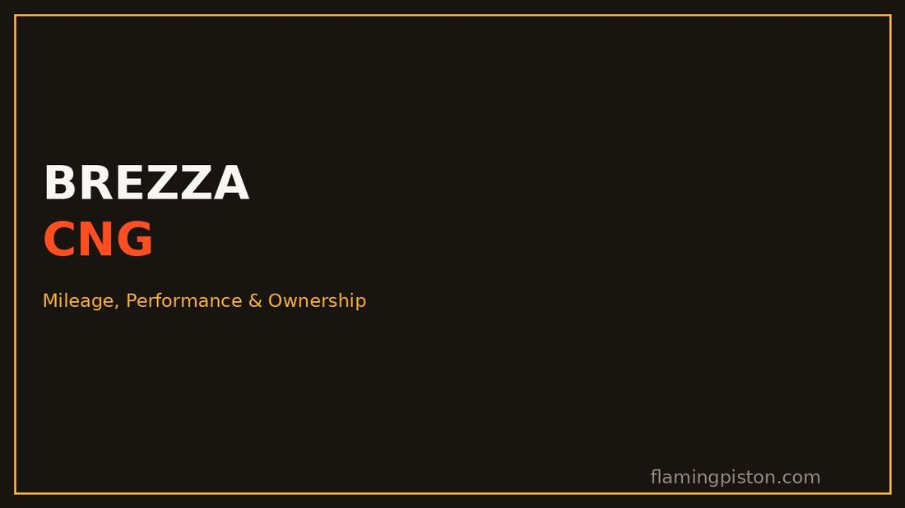
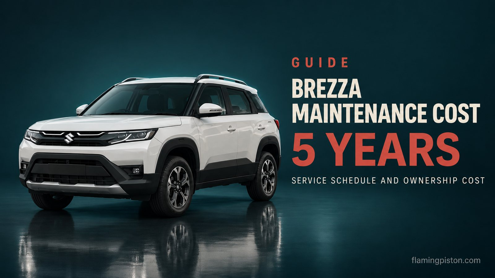

Maruti Brezza Maintenance Cost: Service Schedule and 5-Year Estimate

Image: Maruti Suzuki, edited by FlamingPiston
Published Sep 3, 2026 · Updated Nov 23, 2026
4 min read
Category: Compact SUVs
Routine servicing of a Maruti Brezza should cost about ₹17,092 over the first five years or 50,000 km, and about ₹37,655 over ten years or 1,00,000 km. Those are V3Cars’ estimates. Maruti does not publish service costs for the Brezza, so V3Cars uses its published figures for the Ertiga, which has the same 1.5 petrol and CNG engines. Treat them as a guide, not a quote.
At a glance
- Service interval: every 10,000 km or one year.
- Labour-free services: three (1,000 km, 10,000 km, 20,000 km).
- 5 years / 50,000 km: about ₹17,092 (V3Cars estimate).
- 10 years / 1,00,000 km: about ₹37,655 (V3Cars estimate).
- Warranty: 3 years or 1,00,000 km, extendable to 6 years.
Service-by-service estimate
| Service | Labour | Estimated total |
|---|---|---|
| 1,000 km (1 month) | Free | ₹1,624 |
| 10,000 km (1 year) | Free | ₹1,624 |
| 20,000 km (2 years) | Free | ₹1,624 |
| 30,000 km (3 years) | ₹2,365 | ₹3,499 |
| 40,000 km (4 years) | ₹2,365 | ₹5,222 |
| 50,000 km (5 years) | ₹2,365 | ₹3,499 |
| 60,000 km (6 years) | ₹2,365 | ₹3,989 |
| 70,000 km (7 years) | ₹2,365 | ₹3,499 |
| 80,000 km (8 years) | ₹2,535 | ₹5,587 |
| 90,000 km (9 years) | ₹2,365 | ₹3,499 |
| 1,00,000 km (10 years) | ₹2,365 | ₹3,989 |
Source: V3Cars, read 23 November 2026, based on Maruti’s published Ertiga costs. Totals are labour plus parts and consumables for scheduled services only. They do not include tyres, brake pads, batteries, wiper blades, repairs or accident damage, and local taxes and dealer rates will change them.
What it adds up to
| Period | Total | Per km | Per month |
|---|---|---|---|
| 3 years / 30,000 km | ₹8,371 | ₹0.28 | ₹233 |
| 5 years / 50,000 km | ₹17,092 | ₹0.34 | ₹285 |
| 7 years / 70,000 km | ₹24,580 | ₹0.35 | ₹293 |
| 10 years / 1,00,000 km | ₹37,655 | ₹0.38 | ₹314 |
V3Cars lists the same schedule and costs for the Brezza CNG. Fuel costs far more than servicing: at claimed mileage and Delhi prices, petrol works out to about ₹4.84 a km for the 1.5 manual and CNG about ₹3.23 a km. See our Brezza mileage guide and Brezza CNG guide.
Warranty
Maruti Suzuki’s brochure lists a standard warranty of three years or 1,00,000 km, extendable up to six years with its extended warranty packages. Extended-warranty prices vary by package and dealer, so ask for a written quote when you buy.
Our take
Routine servicing is one of the Brezza’s strengths: three labour-free services and well under ₹6,000 for any single scheduled visit in this estimate. Budget separately for wear parts, and note that no Brezza carries a spare wheel, so a tyre the kit cannot fix may need roadside help. For the full picture, see our Brezza review and pros and cons.
What Owners Say
The facelifted Brezza went on sale in July 2026, so owner reports are still early and most cover under 2,000 km. On 23 November 2026 we read owner posts on Team-BHP, CarWale and CarDekho, leaving out test drives, posts about the older model, duplicate reviews and anyone who had not bought or driven the car. These are owners’ experiences, not measured results; we say how many owners each point rests on.
- Low running costs expected. Four CarWale owners praise Maruti’s service network and low maintenance costs.
- No real bills yet. Most owners have done only the first free service or none at all. We found no owner who has posted what a paid service on the 2026 Brezza actually cost.
Owners share our view that the Brezza should be cheap to keep, but the estimate above is still the best guide until owners report real bills.
FAQs
What is the service cost of the Maruti Brezza for 5 years?
About ₹17,092 for the first five years or 50,000 km of routine servicing, according to a V3Cars estimate based on Maruti’s Ertiga costs, which uses the same 1.5 petrol and CNG engines. It covers scheduled services only, not tyres, brakes, repairs or accidents.
How many free services does the Brezza get?
Three, at 1,000 km, 10,000 km and 20,000 km, on which you pay for parts and consumables but not labour, according to V3Cars. Each comes to about ₹1,624.
How often does the Brezza need servicing?
Every 10,000 km or once a year, whichever comes first, after the first check at 1,000 km.
Does the Brezza CNG cost more to service?
Not in V3Cars’ estimate, which lists the same schedule and the same costs for the CNG as for the petrol. We have not found a separate Maruti figure for the CNG.
What is the Brezza’s warranty?
Three years or 1,00,000 km as standard, extendable up to six years with Maruti’s extended warranty, according to the brochure.
More in the Brezza series: Full Review · Real-World Mileage · Variants Explained · Automatic Review · CNG Review · Turbo vs 1.5 Petrol · Boot Space · Safety & NCAP · Pros & Cons · vs Tata Nexon · vs Fronx · vs XUV 3XO CNG
Sources
- V3Cars: Maruti Brezza maintenance cost
- Maruti Suzuki: New Brezza brochure, features by variant and specifications (official, PDF)
Owner discussions
Links checked 23 November 2026. The service estimate is V3Cars’, based on Maruti’s published Ertiga costs; it is not a Maruti quote for the Brezza. Actual bills vary by city, dealer and driving. Owner reports were read on 23 November 2026; we do not show usernames.